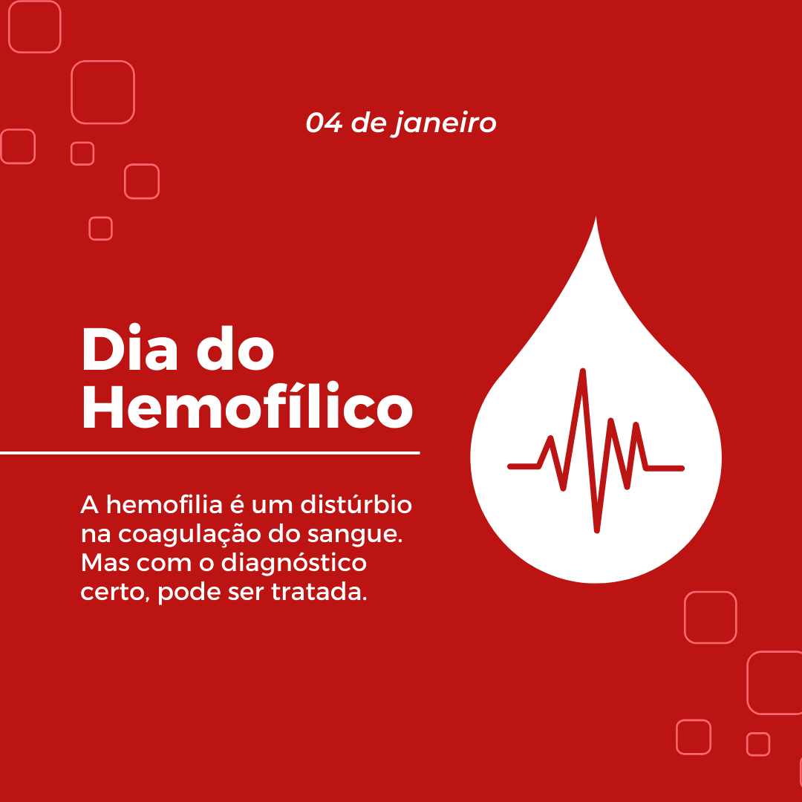

Interação Medicamentosas com Anestésicos Locais:
Os profissionais da área da saúde, em especial os médicos e cirurgiões-dentistas, durante o tratamento de seus pacientes, têm como responsabilidade manter o bem-estar e a segurança, para isso, faz-se a prescrição de medicações e anestésicos. Entretanto, esses fármacos podem interagir e causar alterações potenciais, quando usados com anestésicos locais. Sendo assim, o presente trabalho tem como função detalhar um pouco sobre o problema.
Conceito
A interação medicamentosa é definida como uma alteração no efeito ou na toxicidade de um fármaco em virtude do uso concomitante de outros medicamentos. Essas interações podem ser benéficas, quando aumentam a eficácia do fármaco, ou maléficas, quando diminuem sua eficiência e aumentam sua toxicidade. Isso se torna um problema quando suas consequências causam danos ao paciente, podendo ser até irreversíveis.
Anestéscos Locais:
Os anestésicos locais são medicamentos essenciais para a realização de procedimentos odontológicos.
A principal função é impedir a despolarização das membranas plásmáticas no canal de sódio, bloqueando temporariamente a
transmissão do impulso nervoso e, assim, inibir o sinal de dor do paciente. Isso ocorre sem promover mudanças de consciência no paciente. O anestésico é formado por três porções: uma porção aromática com base lipofílica, que permite sua penetração nas membranas plasmáticas das células; uma cadeia intermediária, que pode ser do tipo amida ou éster; e um grupamento amina hidrofílico, responsável por determinar a solubilidade e a velocidade de ação do fármaco.
Principais Anestésicos Locais
Lidocaína
Ficha do Anestésico
- Nome: Lidocaína 2%
- Mecanismo de ação: bloqueia os canais de sódio, impedindo a condução dos impulsos nervosos e promovendo anestesia local.
- Duração: aproximadamente 40 a 60 minutos de anestesia pulpar (com vasoconstritor).
- Indicações:
- Pacientes pediátricos
- Gestantes
- Diabéticos
- Cardiopatas hipertensos (estágio I ou controlados)
- Asmáticos
- Contraindicações:
- Alergia à lidocaína ou a componentes da formulação
- Bloqueio cardíaco de 2° ou 3° grau (sem marcapasso)
- Doença hepática grave
Articaína
Ficha do Anestésico
- Concentração: 4%
- Potência elevada e rápida difusão tecidual
- Duração média: 60 a 75 minutos
- Indicação: Procedimentos odontológicos de média a longa duração
- Vantagens: Excelente penetração óssea e rápida ação
- Contraindicações:
- Crianças pequenas
- Gestantes
- Observações: Evitar uso em áreas com infecção, pois o pH alterado pode reduzir a eficácia
Mepivacaína
Ficha do Anestésico
- Concentração: 2% a 3%
- Ação intermediária e baixa vasodilatação
- Duração média: 30 a 45 minutos
- Indicação:
- Pacientes que não toleram vasoconstritores
- Procedimentos curtos e moderados
- Contraindicações:
- Hipersensibilidade conhecida
- Doenças hepáticas graves
- Vantagem: Pode ser usada sem vasoconstritor, mantendo boa eficiência anestésica
Prilocaína
Ficha do Anestésico
- Concentração: 3% a 4%
- Baixa toxicidade sistêmica
- Duração média: 40 a 60 minutos
- Indicação:
- Pacientes sensíveis à adrenalina
- Procedimentos de curta a média duração
- Contraindicações:
- Anemia
- Metemoglobinemia
- Observações: Usar com cautela em gestantes e pacientes debilitados
Bupivacaína
Ficha do Anestésico
- Concentração: 0,5%
- Ação prolongada: até 3 a 8 horas
- Alta lipossolubilidade, o que prolonga sua duração
- Indicação: Cirurgias extensas e procedimentos de longa duração
- Contraindicações:
- Gestantes
- Pacientes com doenças cardíacas graves
- Observações: Pode causar arritmias se usada em doses elevadas
Fisiopatologia
Existem dois tipos de Hemofilia, o tipo A e o tipo B, o tipo A é caracterizada por ser de caráter hereditário por alelo recessivo e associado ao cromossomos sexual X, manifestando-se principalmente nos homens, acometida pelo falta de atividade no fator de coagulação VIII, em geral, ela é uma doença congênita, mas pode ser adquirida ao longo da vida. Já a hemofilia do tipo B está associada a uma anomalia no fator IX (nove). Esse patologia permite a produção de anticorpos contra os fatores de coagulação, especialmente contra o fator VIII, são os chamados inibidores de coagulação.

Figura: Representação esquemática acerca da hereditariedade da hemofilia. Retirada de: repositorio.uniceub.br
A gravidade da hemorragia na hemofilia é principalmente determinada por fatores genéticos que influenciam a atividade de coagulação dos fatores VIII ou IX no sangue:
Hemofilia leve: A atividade de coagulação varia entre 5% e 49% do normal. Os portadores de hemofilia leve podem não ser diagnosticados, mas atenção: eles podem apresentar sangramentos excessivos após cirurgias, procedimentos dentários ou lesões.
Hemofilia moderada: A coagulação está entre 1% e 5% do normal. Esses indivíduos com hemofilia moderada muito raramente passam por hemorragias espontâneas, entretanto, podem sofrer sangramentos graves após cirurgias ou lesões. Além disso, o seu primeiro episódio hemorrágico pode acontecer antes dos 18 meses de idade.
Hemofilia grave: A atividade de coagulação é bem prejudicada, com cerca de 1% do normal. Essas pessoas sofrem de hemorragias que geralmente são graves e recorrentes, podendo ser até mesmo espontâneas, sem lesões aparentes. O primeiro episódio hemorrágico pode ocorrer durante ou logo após o parto. Ademais, essas hemorragias podem ocorrer de formas repetidas nas articulações e músculos, causando deformidades musculares. Esses sangramentos também são capazes de obstruir as vias respiratórias, dificultar a respiração e, em casos de traumas na cabeça, causar danos cerebrais fatais.
Sintomas da Hemofilia
-
Equimoses
Sintoma comum: Marcas roxas e lesões pelo corpo que aparecem sem motivo e que podem ter sido causadas por um sangramento debaixo da pele
-
Sangramentos em Músculos e Articulações
Sintoma comum: Dor forte e restrição de movimento em lugares como os joelhos e tornozelos, por conta de sangramentos internos, podendo até ter deficiências no sistema ósseo e dificuldade em se movimentar..
-
Sangramentos Espontâneos
Sintoma comum: Sangramentos que surgem sem nenhum trauma ou razão aparente; cortes que levam muito tempo para parar de sangrar. Em geral, ocorrem hemorragias nas cavidades da pele.
-
Sangramentos nas Mucosas
Sintoma comum: Sangramentos frequentes nas mucosas, como o nariz e a gengiva
-
Dor e Restrição de Movimento
Sintoma comum: Dor forte e restrição de movimento em lugares como os joelhos e tornozelos, por conta de sangramentos internos
Como é realizado o tratamento?
-
Não há cura, mas tem Tratamento!
A hemofilia é uma condição genética que não tem cura, necessitando de tratamento contínuo para controle dos sintomas. Os pacientes dependem de terapias para substituir os fatores de coagulação deficientes e prevenir sangramentos.
-
Profilaxia Primária
Realizar o tratamento contra os sangramentos precocemente é essencial para minimizar as sequelas. Atualmente, uma das abordagens é a profilaxia primária, que consiste na infusão do fator anti-hemofílico duas a três vezes semanais, iniciando-se após o primeiro episódio hemorrágico, isso é feito para prevenir futuras hemorragias e proteger as articulações contra lesões. Em casos de sequelas articulares estabelecidas, pode-se recorrer a medidas profiláticas secundária ou terciária, a fim de melhorar a condição do portador e prevenir próximos sangramentos.
-

Remédios
Um dos tratamentos da hemofilia consiste na reposição justamente dos fatores anti-hemofílicos, os pacientes com hemofilia A recebem fator VIII, enquanto aqueles com hemofilia B recebem fator IX. Essas medicações são distribuídas pelo Ministério da Saúde de forma gratuita nos hemocentros .
.png)

Será que realmente você entendeu? Hemofilia
Questionário
Teste seus conhecimentos sobre hemofilia! Participe do nosso quiz e aprenda mais sobre essa condição genética rara que afeta a coagulação do sangue.